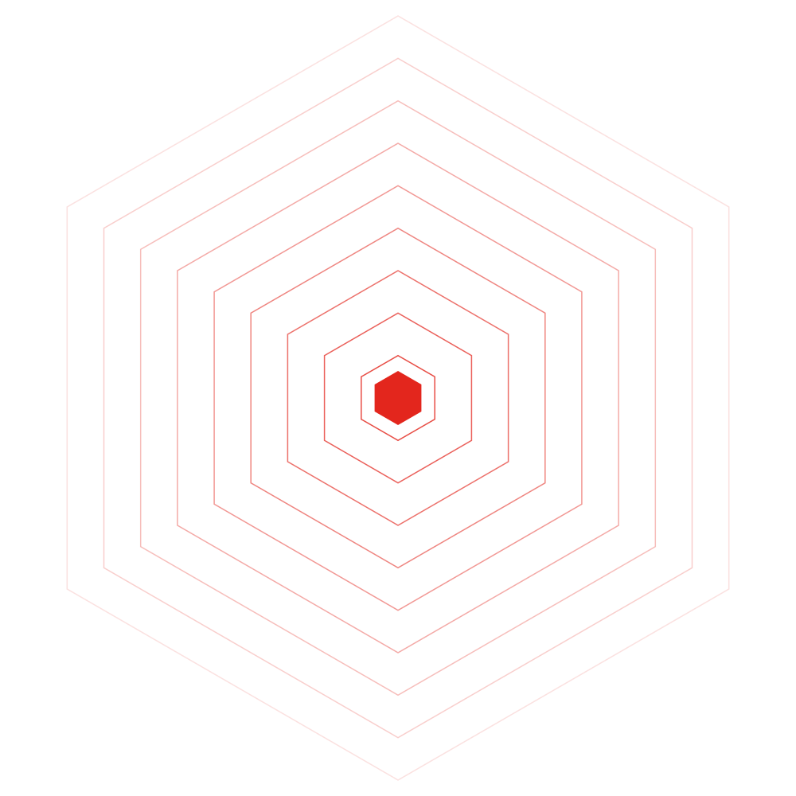

A Snapdragon X laptop ships with a 45 TOPS Hexagon NPU (80 on X2). It can run face tracking, speech recognition, a language model and a vision model at the same time, with camera frames, audio and screenshots never leaving RAM. HP sells that laptop to students as the OmniBook.